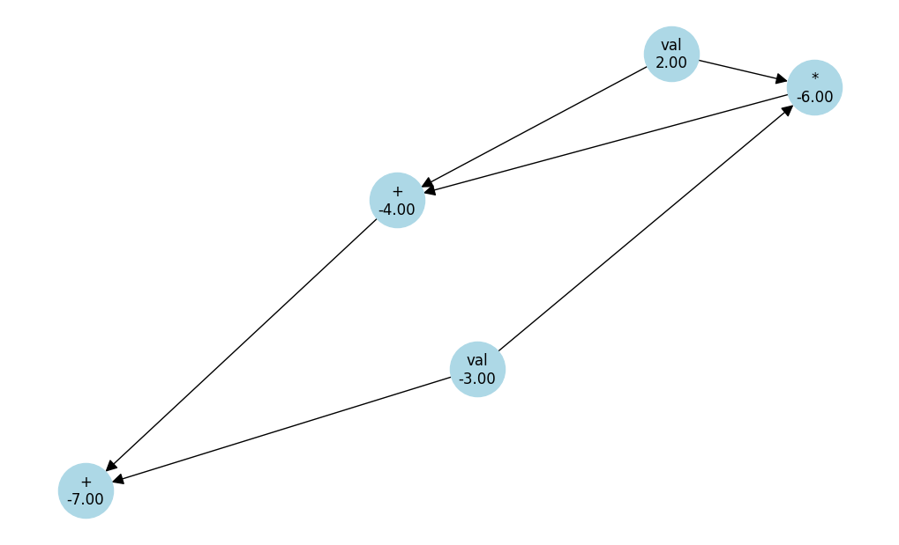

class Value:
def __init__(self, data): store_attr('data', self)
__repr__=basic_repr('data')utils
Some utilities to visualize graph
Value(data=1)Value(data=1)a = Value(2.0)
b = Value(-3.0)from fastcore.utils import patch, patch_to@patch_to(Value)
def __mul__(self:Value, other): return Value(self.data*other.data)a = Value(2.0)
b = Value(-3.0)
a*bValue(data=-6.0, grad=0.0, _op='', _prev=set())class Value:
def __init__(self, data, children=(), op=''):
store_attr('data', self) # Largely overkill but want to try how fastcore works
self._prev = set(children)
self._op = op
self.grad = 0.0
__repr__= basic_repr('data, grad, _op, _prev')@patch_to(Value)
def __add__(self:Value, other): return Value(self.data+other.data, children=(self, other), op="+")
@patch_to(Value)
def __mul__(self:Value, other): return Value(self.data*other.data, children=(self, other), op="*")a = Value(2.0)
b = Value(-3.0)
a*b, a+b(Value(data=-6.0, grad=0.0, _op='*', _prev={Value(data=2.0, grad=0.0, _op='', _prev=set()), Value(data=-3.0, grad=0.0, _op='', _prev=set())}),
Value(data=-1.0, grad=0.0, _op='+', _prev={Value(data=2.0, grad=0.0, _op='', _prev=set()), Value(data=-3.0, grad=0.0, _op='', _prev=set())}))Plan
- I need a good way to visualize the computational graph in solveit. Earlier I used graphviz but it’s not possible in solve it. I am thinking I may use
render_ftand svg functionality but I am open to other suggestions. - Earlier code
# %% ../nbs/01_utils.ipynb 3
import numpy as np
import scipy as sp
import matplotlib.pyplot as plt
# import graphviz
from graphviz import Digraph
from .core import Value
# %% ../nbs/01_utils.ipynb 11
def trace(root):
nodes, edges = set(), set()
def build(v):
if v: nodes.add(v)
for i in v._prev:
nodes.add(i)
edges.add((i, v))
build(i)
build(root)
return nodes, edges
# %% ../nbs/01_utils.ipynb 14
def draw_dot(root):
dot = Digraph(format="svg", graph_attr={"rankdir":'LR'})
nodes, edges = trace(root)
for n in nodes:
# print(str(id(n)))
uid = str(id(n))
dot.node(uid, label=f" {{ {n.label}|{n.data:.4f}| grad: {n.grad:.4f} }}", shape='record') # For { in f-string use {{
if n._op:
dot.node(uid+n._op, n._op)
dot.edge(uid+n._op, uid)
for n1, n2 in edges:
dot.edge(str(id(n1)), str(id(n2))+n2._op)
return dotHelp me get started
🤖Reply🤖
I can help you visualize your computational graph in solveit! Since graphviz rendering won’t work here, let’s explore some alternatives.
A few options:
matplotlib with networkx - Draw the graph using matplotlib (which works in solveit). This would give you a visual diagram similar to graphviz.
ASCII/text representation - Create a simple text-based tree view that shows the computation structure.
HTML/SVG with custom rendering - Build SVG elements manually and display them.
Which approach interests you most? Or would you like me to show you a quick example of one of them (I’d suggest starting with matplotlib+networkx since those libraries are already available)?
Ok let’s try first with networkx
trace
trace (root)
import networkx as nx
def draw_graph(root):
nodes, edges = trace(root)
G = nx.DiGraph()
for n in nodes:
label = f"{n._op if n._op else 'val'}\n{n.data:.2f}"
G.add_node(id(n), label=label)
for n1, n2 in edges:
G.add_edge(id(n1), id(n2))
pos = nx.spring_layout(G)
labels = nx.get_node_attributes(G, 'label')
plt.figure(figsize=(10, 6))
nx.draw(G, pos, labels=labels, node_color='lightblue',
node_size=2000, arrows=True, arrowsize=20)
plt.show()c = a*b+ a+b
draw_graph(c)
I want to build something like this 

draw_dot
draw_dot (root)
draw_dot(c)
```{=html}
————————————————————————— AttributeError Traceback (most recent call last) Cell In[1], line 1 —-> 1 draw_dot(c)
Cell In[1], line 7, in draw_dot(root) 4 for n in nodes: 5 # print(str(id(n))) 6 uid = str(id(n)) —-> 7 dot.node(uid, label=f“